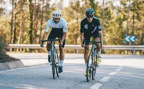

Your Ultimate Source for Cycling
Explore the thrilling world of cycling and stay updated with the latest news, events, and amazing cycling journeys.
Discover fascinating facts about the Tour de France and the rich history of cycling.
Did you know? The Tour de France, first staged in 1903, is the world's most well-known and prestigious bicycle race. The race covers more than 3,500 kilometers throughout France and includes challenging mountain stages, time trials, and flat terrain.
Over the years, the Tour de France has become a symbol of endurance, teamwork, and the pursuit of excellence in the world of cycling.
-Write html code for a cool professional website to showcase the sport of cycling
-Could you revise the code by adding a centered (the file is cycling.jpg) Get rid of the "About Us" and "Upcoming Events" sections and add a "History" section with some interesting Tour de France facts
-Instead of the "Contact Us" section, could you replace it with "Past Tour Winners" and could you embed it with the following link: https://www.topendsports.com/events/tour-de-france/winners-list.htm
-Under photo gallery could you put these 4 pictures side by side: "tour1.jpg", "tour2.jpg", "tour3.jpg", "tour4.jpg"
-Could you create a css file called "aipagestyle.css" to give an additional overall style to the webpage. The html file is "aipage.html". Do not use any libraries or Bootstrap.